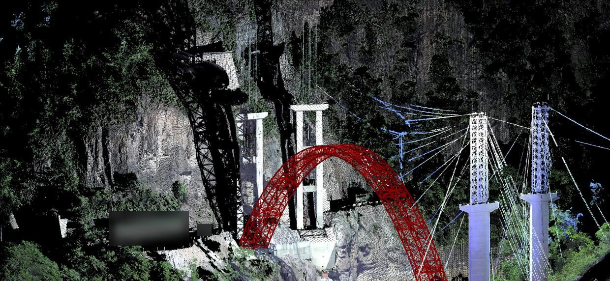

Automated modelling
From drawings and point clouds to a model an engineer can check
Most ageing structures have drawings, and many have been scanned. Very few have an analysis model. EarthState builds that model automatically from what the owner already holds, runs its own checks on it and records every assumption.

Straight from the drawing set
A drawing set that arrives as a vector PDF from CAD is read directly: the lines on each page, the dimension chains and the text labels. Where the general arrangement has a side view, the result is a member-level model, not an outline.
- Vector PDF drawings, or node and member tables from the drawing workbook
- 3D frame model with sections and steel grades on every member
- Self-checks: gravity equilibrium, no mechanisms in the stiffness matrix, natural frequencies
- Readings are kept per drawing file, so a reviewer can trace them
Comparison on one real 66 m double-circuit angle tower with anonymised drawing geometry. Independent engineering review of the verification cases is in progress.

From a laser scan of what is really there
Where drawings are missing, or no longer match the structure, the model starts from a scan. Terrestrial laser scanning feeds point-cloud processing, a parametric model and then finite element analysis, so the assessment uses measured geometry.
- Components recognised and separated in the point cloud
- Parametric geometry fitted to the measured shape
- The same model handed to structural analysis
Method developed and published by the founder; it is being brought into EarthState Twin.
Published results from the founder's peer-reviewed work on real and experimental bridges.
One source, two models
An analysis model and an information model from the same drawings
The drawings that produce the structural model also produce a BIM model, so the asset record and the calculation never drift apart.
Analysis model
Member-level finite element model, wind loads to EN 1991-1-4, member checks to EN 1993, and a reduced-order model for fast scenario runs.
IFC4 model
One IfcMember per member, the structure as an assembly, Uniclass 2015 classification, EN 10025-2 materials and names that follow ISO 19650-2 with the UK National Annex.
Asset data
A COBie workbook linked to the model, information requirements to EN 17412-1, and ISO 19650-4 style acceptance checks before anything is issued.
How a model is accepted